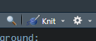
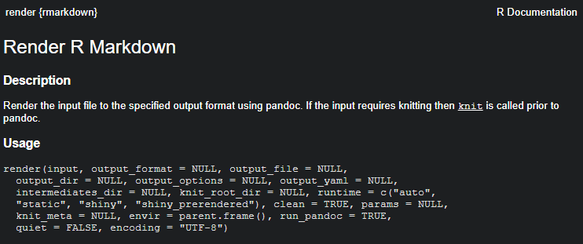
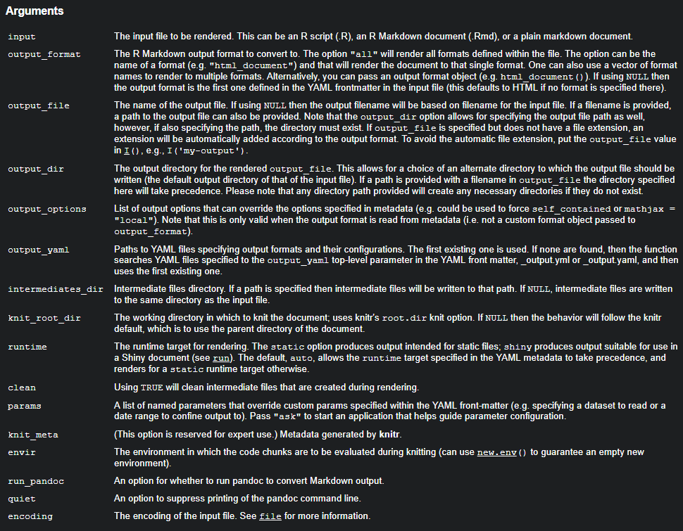
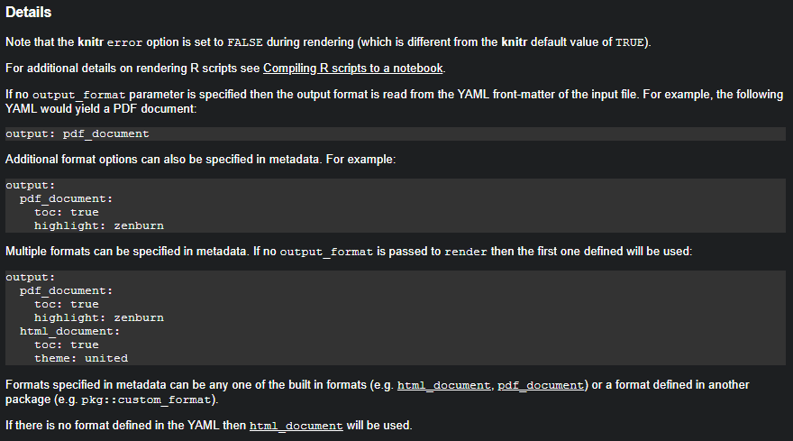
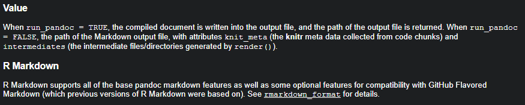

We discuss the R Markdown document format developed by RStudio. R Markdown is a document format, and rmarkdown is an R package. There can be confusion when talking about the two, and in this course we are usually talking about the R Markdown document format. Most of this portion of the class uses references from the Rstudio R Markdown website, the rmarkdown package website and the R Markdown book. We will walk through creating an R Markdown document that we will use for the initial template of our branded document.
R Markdown is a document format built to embed R code chunks in Markdown documents. R Markdown documents remove most of the formatting aspects of report generation to a “back-end.” R Markdown can be used to generate many different output some of which are websites, PDFs, presentations, shiny, and Word documents. In this course we are going to focus on PDF documents, but in general the same R Markdown document can be used to produce all of the above with minimal changes.
R markdown provides a medium to attach and run code inside the content for dashboards, articles, reports, websites, PowerPoint and books. This medium provides a reproducible and portable format that works with text based version control systems. These characteristics generally make R markdown documents easy to put into production systems
As previously mentioned R markdown plays well with text based version control systems, and that is because at its core an R markdown document is just a text file. R markdown files have .rmd extensions but you could potentially render any text file no matter the extension. If you expect the RStudio IDE to recognize an R markdown document it needs the .rmd extension. Let us take the easy route and create an R markdown document from the RStudio IDE menu.
Menu drop-down
Thumbnail
The R markdown document consists of three parts:
The YAML header contains metadata about the R markdown document such as the title, authors, and output of the document. Think of the YAML header as parameters for a set of directions that the Pandoc system will use. We will do a lot with the YAML header in this course.
---
title: "Untitled"
author: "Name"
date: "Date"
output: pdf_document
---Code chucks contain analysis code for the report. This is what powers reproducibility in R markdown documents. Code chunks can run several different programming engines that we will discuss later.
```{r}
1 + 1
```Unformatted text finishes out the body of the R markdown document. The formatting for the body is contained in template documents that Pandoc uses as directions.
## Executive Summary
This analysis describes all sorts of cool things going on in your business.R markdown can be used to build PDFs documents using latex. We can usually tell what R markdown documents are going to render as PDFs by output specified in the yaml header.
---
title: "Untitled"
author: "Name"
date: "Date"
output: pdf_document
---The PDFs_document output option actually references a function. We are going to create our own output function that wraps the PDFs_document function. This will end up being one of the few functions in the R package we will build. We will discuss further in the R package portion of the course. The PDFs_document function has some options that we can specify in the yaml of our R markdown document. These next subsections discuss some of these options.
For longer reports and documents it is useful to have a Table of Contents. The PDFs documents generated from R markdown can automatically build the table of contents for you. We can build the table of contents by setting toc: true in the yaml options under the pdf_document output. You might also notice that toc is a function call option in pdf_document, and we should expect it to be listed under pdf_document in the yaml.
---
title: "Untitled"
author: "Name"
date: "Date"
output:
pdf_document:
toc: true
toc_depth: 3
---Another option under pdf_document was added with toc. The yaml toc_depth should always be added with toc: true. It isn’t that you can’t specify it, but there really isn’t much of a reason to specify it. The toc_depth or table of contents depth sets the depth of sections/subsections listed in the table of contents. The number specified by toc_depth corresponds to the number of # preceding your section/subsection name in the R markdown document. If you wonder why the subsection isn’t showing up in the table of contents then you should count the #s and see if that count matches the toc_depth.
The pdf_document function has several figure options you can put in the r markdown yaml header. The options fig_width and fig_height specify the default width and height in inches for figures in the document. You might notice that fig_width and fig_height have default values in the pdf_document function as 6.5 and 4.5 inches respectively. The fig_crop options controls whether the pdfcrop utility is used. The pdfcrop utility trims white-space or fixed borders from PDFs graphics. Most people wouldn’t notice anything is being done, but it is recommended by the developers to use the fig_crop option. The fig_crop option is defaulted to TRUE. The fig_caption option controls whether captions should be rendered with figures. Finally, the dev option is for the graphics device used to produce figure output. The dev option is pdf by default but this could potentially be png or jpeg. I only ever find it worth while to change the fig_height and fig_width options to maximize the figure size on the viewable page.
title: "Unititled"
output:
pdf_document:
fig_width: 7
fig_height: 6The df_print option lets us change the display of data frames in our output. Options include default, kable, and tibble. I never really just print data frames in my output, and there is generally some formatting before they are presentation ready. I usually leave this option as it is and build my presentation tables with the xtable package.
---
title: "Untitled"
output:
pdf_document:
df_print: kable
---The highlight option specifies how code chunks are displayed in the document. Some options you can use are default, espresso, haddock, kate, monochrome, pygments, tango, and zenburn. Please don’t ever using any of the dark themes.
Aside form the options we see in pdf_document there are also options that are specified in the top-level YAML header. These top-level options can also be specified within the render function, but this is only important if you want to change the defaults.
| Variable | Description |
|---|---|
| lang | Document language code |
| fontsize | Font size (e.g., 10pt, 11pt, or 12pt) |
| documentclass | LaTex document class (e.g., article) |
| classoption | Options for documentclass (e.g., oneside) |
| geometry | Options for geometry class (e.g., margin=1in) |
| mainfont, sansfont, monofont, mathfont | Document fonts (works only with xelatex and lualatex) |
| linkcolor, urlcolor, citecolor | Color for internal, external, and citation links |
We are going to simplify our LaTex templates significantly and remove many of these options, but these are available in the default LaTex template shipped with rmarkdown.
The developers suggest using a LaTex citation package might produce better results than the default pando-citeproc. The LaTex packages natbib and biblatex are two options. I don’t see much reason to change this option even with PDF documents. To use citations you will need to specify a bibliography with the top-level YAML bibliography or use inline references. I do not recommend inline references. My suggestion would be to use a bibliography manager and export you bibliography in one of the acceptable formats.
| Format | File extension |
|---|---|
| MODS | .mods |
| BibLaTeX | .bib |
| BibTeX | .bibtex |
| RIS | .ris |
| EndNote | .enl |
| EndNote XML | .xml |
| ISI | .wos |
| MEDLINE | .medline |
| Copac | .copac |
| JSON citeproc | .json |
There a a few options that allow us to do some more customization and debugging of the underlying LaTeX code. We can specify the latex_engine used such as pdflatex, xelatex, and lualatex. We can also keep the intermediate LaTeX code using keep_tex: true, and include snippets of LaTeX code in the document. The option includes allows us to put code in_header, before_body, and after_body. What wwe are going to end up using and is the power behind document templates is the template option, but we aren’t going to specify our template in document YAML header.
---
title: "Habits"
output:
pdf_document:
latex_engin: pdflatex
keep_tex: true
includes:
in_header: preamble.tex
before_body: doc-prefix.tex
after_body: doc-suffix.tex
template: custom-template.tex
---Now that we have seen all these options lets start building a rmarkdown report on Iris Petal and Sepal Length. We are using the Iris data set as a minimal example to base our future template. We will end up renaming some things later on. Lets start by starting a new r markdown document by going to File > New File > R Markdown… You can fill out the title and author to anything you want because we will change these later on. Make sure you choose PDF, but it isn’t the end of the world if you don’t.
Our header should look something like this:
---
title: "Iris Petal and Sepal Length"
author: "Ben Barnard"
date: "February 15, 2020"
output: pdf_document
---I plan to run this report many times and I would like the date to update each time I run the report.
To run R code in the YAML header we just need to add !r before the R code we wish to run. In this case I want to run Sys.Date() to use the run date for the report date.
---
title: "Iris Petal and Sepal Length"
author: "Ben Barnard"
date: !r Sys.Date()
output: pdf_document
---I think thats the important stuff for the header right now. Let us start working on the body.
Notice the first code chunk in document. The knitr::opts_chunk$set(echo = TRUE) sets the code chunk options for the rest of the code chunks in the document. Depending on the audience we might want to set echo = FALSE, and we might also want to set message = FALSE and warning = FALSE.
```{r setup, include=FALSE}
library(ggplot2)
knitr::opts_chunk$set(echo = FALSE, message = FALSE, warning = FALSE)
```Now lets add some body to the document. All analyses need some sort of introduction or executive summary.
## Executive Summary
This analysis descrbes the design and results of our correlation analysis of
iris sepal length and petal length. This is just a minimal example for our
analysis template.
#### Audience:
The Conference on Statistical Practice 2020 short course attendees. Future
attendees of this course.
#### Background:
This course was submitted to the Conference on Statistical Practice 2020. This
is the minimal example template we build in the course.
#### Deliverables:
A minimal working template for use in an R package to store and delivery latex
templates for r markdown documents.
#### Deadline(s):
The short course will be taught at the Conference on Statistical Practice 2020
on February 20, 2020.
Finally lets add a plot into the document because no analysis is complete without a pretty picture.
```{r}
ggplot(data = iris) +
geom_point(aes(x = Sepal.Length, y = Petal.Length, color = Species))
```We are going to improve on the formatting and themes of this document as we progress through this course.
There are two ways to render an r markdown document using the knit button in the RStudio IDE or render available in the rmarkdown package.
The knit button is great for interactively building an r markdown document, and if you need to run an analysis one-time for somebody. With the limitation of having to press the knit button it isn’t so great for automation.

The render function allows us to achieve the automation we want. The render function is also what we would embed in shiny apps to build our analyses.
   
names(knitr::knit_engines$get())## [1] "awk" "bash" "coffee" "gawk" "groovy" "haskell"
## [7] "lein" "mysql" "node" "octave" "perl" "psql"
## [13] "Rscript" "ruby" "sas" "scala" "sed" "sh"
## [19] "stata" "zsh" "highlight" "Rcpp" "tikz" "dot"
## [25] "c" "fortran" "fortran95" "asy" "cat" "asis"
## [31] "stan" "block" "block2" "js" "css" "sql"
## [37] "go" "python" "julia" "sass" "scss"```{python}
x = 'hello, python world!'
print(x.split(' '))
``````{bash}
echo "Hello Bash!"
cat flights1.csv flights2.csv flights3.csv > flights.csv
``````{r}
library(DBI)
db = dbConnect(RSQLite::SQLite(), dbname = "sql.sqlite")
```
```{sql, connection=db}
SELECT * FROM trials
``````{tikz, tikz-ex, fig.cap = "Funky tikz", fig.ext = 'png', cache=TRUE}
\usetikzlibrary{arrows}
\begin{tikzpicture}[node distance=2cm, auto,>=latex', thick, scale = 0.5]
\node (P) {$P$};
\node (B) [right of=P] {$B$};
\node (A) [below of=P] {$A$};
\node (C) [below of=B] {$C$};
\node (P1) [node distance=1.4cm, left of=P, above of=P] {$\hat{P}$};
\draw[->] (P) to node {$f$} (B);
\draw[->] (P) to node [swap] {$g$} (A);
\draw[->] (A) to node [swap] {$f$} (C);
\draw[->] (B) to node {$g$} (C);
\draw[->, bend right] (P1) to node [swap] {$\hat{g}$} (A);
\draw[->, bend left] (P1) to node {$\hat{f}$} (B);
\draw[->, dashed] (P1) to node {$k$} (P);
\end{tikzpicture}
```Parameterized reports are a way to build the same general reports while changing certain parameters in the report to run a completely different analysis. You can pass parameters in the render function and parameters can be set interactively.
---
title: My Document
output: html_document
params:
year: 2018
region: Europe
printcode: TRUE
data: file.csv
---Parameters are passed into the R markdown environment as the list params.
We have to declare parameters a little differently from above to interactive set parameters in a shiny instance. If you are building your own shiny app to build a report this is not necessary.
---
title: My Document
output: html_document
params:
year:
label: "Year"
value: 2017
input: slider
min: 2010
max: 2018
step: 1
sep: ""
region:
label: "Region:"
value: Europe
input: select
choices: [North America, Europe, Asia, Africa]
printcode:
label: "Display Code:"
value: TRUE
---The options available are the input types available in the shiny package. Not every shiny input type works.
| Input Type | Shiny Function |
|---|---|
| checkbox | checkboxInput |
| numeric | numericInput |
| slider | sliderInput |
| date | dateInput |
| text | textInput |
| file | fileInput |
| radio | radioButtons |
| select | selectInput |
| password | passwordInput |